2D Shape Collections API Reference
Contents
- COL_Angle
- CollectionsAngle
- COL_Axis
- CollectionsAxis
- COL_Button
- CollectionsButton
- COL_Line
- CollectionsLine
- COL_Plot
- CollectionsPlot
- COL_Polyline
- CollectionsPolyline
- COL_Rectangle
- CollectionsRectangle
- COL_Slider
- CollectionsSlider
- COL_Toggle
- CollectionsToggle
- OBJ_Collection
COL_Angle
Extends OBJ_Collection
CollectionsAngle options object that extends OBJ_Collection
options object (without parent).
The Collections Angle is a convient and powerful angle FigureElementCollection that can draw one or several arcs of an angle annotation, a label, arrows, and the corner of an angle. It also includes some methods to make it convient to use dynamically.
There are two ways to define an angle. With a position, startAngle and
angle, or with three points. The angle can then be annotated with a curve
and a label on either side of the corner using the direction property.
The first way to define an angle is with position, startAngle and
angle. position is the location of the vertex of the corner.
Two lines join to make a corner, from which an angle annotation can be
superimposed. The first line is defined with startAngle and the second
line defined by angle relative to the first line. angle can either be
positive or negative to define the second line.
The second way to define an angle is with three points p1, p2 and p3.
p2 is the vertex position of the corner. Line21 is first line of the
corner and Line23 is the second.
An angle can be annotated with a curve (or many multiple curves) and a
label. direction defines which side of the corner the annotations will
be drawn. direction can either be positive or negative (1 or -1).
A positive direction will place the annotations:
- on the angle formed between
startAngleandangle - OR the angle formed between Line21 and Line23 in the positive rotation direction
A negative direction will place the annotations on the other side of the corner.
A curve with multiple lines and/or arrows can be defined with curve.
A label that can be the real angle in degrees or radians, text or an
equation can be defined with label.
The annotations will be placed at some radius from the corner vertex.
offset can be used to draw the line some offset away from the line
definition where a positive offset is on the side of the line that the line
rotates toward when rotating in the positive direction.
Pulsing this collection normally would pulse the scale of everything.
If it often desirable to pulse only parts of the angle in special ways.
Therefore this collection provides a method pulseAngle to allow this.
This options object can define the default values for pulseAngle if desired.
Properties
- position: Point | undefined
- startAngle: number | undefined
rotation where the angle should start
- angle: number | undefined
size of the angle
- p1: Point | undefined
alternate way to define startAngle with
p2andp3 - p2: Point | undefined
alternate way to define position of the angle vertex with
p2andp3 - p3: Point | undefined
alternate way to define size of angle with
p2andp3 - direction: 1 | -1 | undefined
side of the corner the angle annotations reside
- curve: OBJ_AngleCurve | undefined
options for a curve annotation
- arrow: TypeAngleArrows | undefined
options for arrow annotations
- corner: OBJ_AngleCorner | undefined
options for drawing a corner
- label: TypeAngleLabelOptions | undefined
options for label annotations
- pulseAngle: OBJ_PulseAngle | undefined
default pulseAngle options
CollectionsAngle
FigureElementCollection representing an angle.

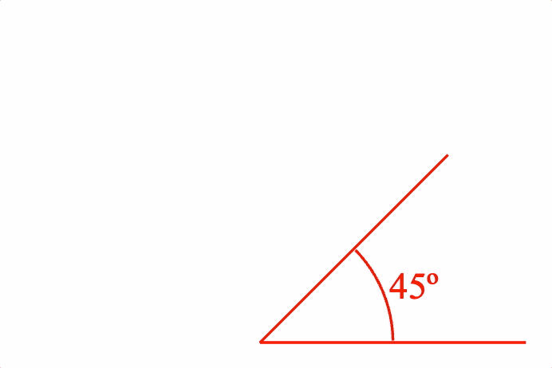

This object defines a convient and powerful angle FigureElementCollection that includes one or more curve annotations, arrows, a label annotation that can self align and some methods to make it convient to use dynamically.
See COL_Angle for the options that can be used when creating the angle.
The object contains two additional animation steps angle and pulseAngle
that animate a change in angle, and animate a pulsing of the angle
respectively. The animation steps are available in
the animation manager ( FigureElement.animations),
and in the animation builder
(animations.new
and animations.builder).
Some of the useful methods included in an collections angle are:
- pulseAngle - customize pulsing the angle without
- setMovable - overrides FigureElement.setMovable and allowing for more complex move options.
Angle with size label
figure.add({
name: 'a',
make: 'collections.angle',
angle: Math.PI / 4,
label: null,
curve: {
radius: 0.5,
width: 0.01,
},
corner: {
width: 0.01,
length: 1,
},
});
Right angle, created from figure.collections
const a = figure.collections.angle({
angle: Math.PI / 2,
curve: {
autoRightAngle: true,
width: 0.01,
},
corner: {
width: 0.01,
length: 1,
},
});
figure.add('a', a);
Multi colored angle with arrows and an equation label
figure.add({
name: 'a',
make: 'collections.angle',
angle: Math.PI / 4 * 3,
label: {
text: {
elements: {
theta: { text: '\u03b8', color: [1, 0, 1, 1] },
},
forms: {
0: { frac: ['theta', 'vinculum', '2']},
},
},
offset: 0.05,
location: 'inside',
color: [0, 0, 1, 1],
},
curve: {
radius: 0.5,
width: 0.01,
},
arrow: 'barb',
corner: {
width: 0.01,
length: 1,
color: [0, 0.5, 0, 1],
},
});
Multiple curve angle, without corner
const a = figure.collections.angle({
angle: Math.PI / 4,
curve: {
num: 3,
step: -0.03,
radius: 0.5,
width: 0.01,
},
label: {
text: 'a',
offset: 0.05,
},
});
figure.add('a', a);
Change angle animation
figure.add({
name: 'a',
make: 'collections.angle',
angle: Math.PI / 4,
label: null,
curve: {
radius: 0.5,
width: 0.01,
},
corner: {
width: 0.01,
length: 1,
},
});
figure.elements._a.animations.new()
.angle({ start: Math.PI / 4, target: Math.PI / 4 * 3, duration: 3 })
.start();
Movable angle
figure.add({
name: 'a',
make: 'collections.angle',
angle: Math.PI / 4 * 3,
label: {
text: null,
location: 'outside',
orientation: 'horizontal',
offset: 0.1,
update: true,
sides: 200,
},
curve: {
radius: 0.3,
fill: true,
},
corner: {
width: 0.02,
length: 1,
color: [0.4, 0.4, 0.4, 1],
},
});
figure.elements._a.setMovable({
startArm: 'rotation',
endArm: 'angle',
movePadRadius: 0.3,
});
See OBJ_AngleAnimationStep for angle animation step options.
See OBJ_PulseAngleAnimationStep for pulse angle animation step options.
To test examples below, append them to the boilerplate.
COL_Axis
Extends OBJ_Collection
CollectionsAxis options object that extends OBJ_Collection
options object (without parent).
A zoom axis can be used to create a number line, used as an axis in COL_Plot and/or used to plot a COL_Trace against.
An axis is a line that may have
- tick marks
- labels
- grid lines
- a title
An axis is drawn to a length. It will have values along its length
from start to stop. Ticks, grid lines and labels are all drawn
at axis value positions. All other dimensions, such as line lengths,
widths, positions, spaces and offsets are defined in draw space, or in the
same space as the length of the axis.
Properties
- axis: 'x' | 'y' | undefined = 'x'
'x'axes are horizontal,'y'axes are vertical - length: number | undefined
length of the axis in draw space
- line: OBJ_AxisLineStyle | boolean | undefined
line style of the axis -
falsewill draw no line. By default, a solid line will be drawn if not defined. - start: number | undefined = 0
start value of axis
- stop: number | undefined = start + 1
stop value of axis.
stopmust be larger thanstart - ticks: OBJ_AxisTicks | Array<OBJ_AxisTicks> | boolean | undefined = false
tick options. Use an Array to setup multiple sets/styles of ticks. Use a boolean value to turn ticks on or off. Use a TypeTickLocation to only set tick location property
- labels: OBJ_AxisLabels | string | () => Array<string> | undefined
label options. Use
falseto turn labels off, or a string or function as a callback to define custom labels for a set of values. Use TypeLabelLocation to only set the label location property. - grid: OBJ_AxisTicks | Array<OBJ_AxisTicks> | boolean | undefined = false
grid options. Use an array for multiple sets of grids, and use a boolean to turn grids on and off
- title: OBJ_AxisTitle | string | undefined
axis title
- font: OBJ_Font | undefined = used by title and labels
default font of axis
- show: boolean | undefined = true
falsehides the axis. Two axes are needed to plot an CollectionsTrace on a CollectionsPlot, but if either or both axes aren't to be drawn, then usefalseto hide each axis - auto: [number, number] | undefined
Will select automatic values for
start,stop, andstepthat cover the range [min, max] - autoStep: boolean | 'decimal' | undefined = false
If
truethen start, stop and step tick, grid and label values will be automatically calculated such that they land on 0 and either double/half the original step (true) or ensure the steps land on factors of 10 ('decimal'). This needs to be notfalseif panning or zooming. Iffalse, then the tick, grid and label values will be from thestart,stopandstepproperties. - min: number | null = null
minimum value axis can be zoomed or panned to where
nullno limit - max: number | null = null
maximum value axis can be zoomed or panned to where
nullno limit - position: TypeParsablePoint | undefined = [0, 0]
axis position
- values: Array<number> | undefined
custom values for labels, ticks and grid. Only works for one level of ticks and grid, and doesn't not accomodate zooming or panning.
CollectionsAxis
FigureElementCollection representing an Axis.

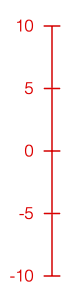

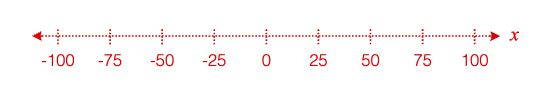

This object defines an axis with an axis line, tick marks, labels, grid lines and a title.
See COL_Axis for the options that can be used when creating the axis.
An axis is drawn to a length. It will have values along its length
from start to stop. Ticks, grid lines and labels are all drawn
at axis value positions. All other dimensions, such as line lengths,
widths, positions, spaces and offsets are defined in draw space, or in the
same space as the length of the axis.
The object contains additional methods that convert between axis values and draw space positions, as well as a convenience method to report if a value is within an axis.
To test examples below, append them to the boilerplate.
For more examples of axis labels and axis ticks, see OBJ_AxisLabels and OBJ_AxisTicks.
By default an axis is an 'x' axis
figure.add({
make: 'collections.axis',
});
An axis can also be created and then added to a figure
// An axis can have specific start and stop values
// An axis can be a y axis
const axis = figure.collections.axis({
axis: 'y',
start: -10,
stop: 10,
step: 5,
});
figure.add('axis', axis);
An axis can have multiple sets of ticks and a title
figure.add({
make: 'collections.axis',
step: [0.2, 0.05],
ticks: [
true,
{ length: 0.04, location: 'bottom' },
],
title: 'time (s)',
});
An axis line and ticks can be customized to be dashed
// and have arrows
figure.add({
make: 'collections.axis',
length: 2.5,
start: -100,
stop: 100,
step: 25,
line: {
dash: [0.01, 0.01],
arrow: 'barb',
},
ticks: { dash: [0.01, 0.01] },
title: {
font: { style: 'italic', family: 'Times New Roman' },
text: 'x',
location: 'right',
},
});
An axis can have grid lines extend from it, and
// multi-line, formatted titles
figure.add({
make: 'collections.axis',
stop: 2,
step: [0.5, 0.1],
grid: [
{ length: 1, color: [0.5, 0.5, 0.5, 1] },
{ length: 1, dash: [0.01, 0.01], color: [0.7, 0.7, 0.7, 1] },
],
title: {
font: { color: [0.4, 0.4, 0.4, 1] },
text: [
'Total Time',
{
text: 'in seconds',
font: { size: 0.1 },
lineSpace: 0.12,
},
],
},
});
COL_Axis for parameter descriptions
COL_Button
Extends OBJ_Collection
CollectionsButton options object that extends OBJ_Collection
options object (without parent).
Properties
- width: number | undefined
button width
- height: number | undefined
button height
- corner: OBJ_CurvedCorner | undefined
button corner
- line: null | OBJ_LineStyleSimple | undefined
button outline - use
nullto remove the default line - label: OBJ_ButtonLabel | undefined
button label
- colorLine: TypeColor | undefined
- colorFill: TypeColor | undefined
- colorLabel: TypeColor | undefined
- touchDown: OBJ_ButtonColorState> | undefined
set colors between a touch down and touch up
- states: Array<OBJ_ButtonState | string> | undefined
CollectionsButton
FigureElementCollection representing a button.


A button can be simple, or it can change state with each press.
Notifications - The notification manager property notifications will
publish the following events:
touch: button is pressed - the current state index is passed to the subscriber
See COL_Button for setup options.
To test examples below, append them to the boilerplate
Simple button
figure.add({
make: 'collections.button',
label: 'Start',
});
Borderless button
figure.add({
make: 'collections.button',
label: 'Start',
colorFill: [0.8, 0.8, 0.8, 1],
line: null,
});
Button that changes state and has a touch buffer of 0.1 around it
const button = figure.add({
make: 'collections.button',
states: ['Slow', 'Medium', 'Fast'],
width: 0.7,
height: 0.3,
touchBorder: 0.1,
});
button.notifications.add('touch', (index) => {
console.log(index);
});
COL_Line
Extends OBJ_Collection
CollectionsLine options object that extends OBJ_Collection
options object (without parent).
The Collections Line is a convient and powerful line FigureElementCollection that includes the line, arrows, a label annotation and some methods to make it convient to use dynamically.
A line can either be defined by its two end points (p1, p2), or a
point (p1), length and angle.
offset can be used to draw the line some offset away from the line
definition where a positive offset is on the side of the line that the line
rotates toward when rotating in the positive direction. This is especially
useful for creating lines that show dimensions of shapes.
The line also has a control point which is positioned on the line with the
align property. The control point is the line's center of rotation, and
fixes the point from which the line changes length. This is also the point
where the line collection position will be if getPosition is called on the
element.
For instance, setting the control point at align: 'start' will mean that
if the line can rotate, it will rotate around p1, and if the length is
changed, then p1 will remain fixed while p2 changes.
width sets the width of the line. Setting the width to 0 will hide the
line itself, but if arrows or a label are defined they will still be
displayed.
Use the label property to define and position a label relative to the line.
The label can be any string, equation or the actual length of the line and
be oriented relative to the line or always be horizontal.
Use the arrow and dash properties to define arrows and the line style.
Pulsing this collection normally would pulse both the length and width of
the line. If it often desirable to pulse a line without changing its length,
and so this collection provides a method pulseWidth to allow this. This
options object can define the default values for pulseWidth if desired.
Default pulse values can then be specified with the pulse property.
Properties
- p1: TypeParsablePoint | undefined
First point of line
- p2: TypeParsablePoint | undefined
Will override
length/angledefinition - angle: number | undefined
line angle
- length: number | undefined
line length
- offset: number | undefined
line offset
- align: 'start' | 'end' | 'center' | number | undefined = only needed if rotating line
rotation center of line
- width: number | undefined
line width
- label: OBJ_LineLabel | undefined
label annotation
- arrow: OBJ_LineArrows | TypeArrowHead | undefined = s
line arrow
- dash: TypeDash | undefined
make the line dashed
- pulseWidth: OBJ_PulseWidth | undefined
default options for pulseWidth pulse
- pulse: OBJ_Pulse | undefined
default options for normal pulse
- move: OBJ_LineMove | undefined
line move options
CollectionsLine
FigureElementCollection representing a line.


This object defines a convient and powerful line FigureElementCollection that includes a solid or dashed line, arrows, a label annotation that can self align with line orientation, and some methods to make it convient to use dynamically.
See COL_Line for the options that can be used when creating the line.
The object contains a two additional animation steps. length
animates changing the line length, and pulseWidth animates the
pulseWidth method. The animation steps are available in
the animation manager ( FigureElement.animations),
and in the animation builder
(animations.new
and animations.builder).
Some of the useful methods included in an collections line are:
- pulseWidth - pulses the line without changing its length
- grow - starts and animation that executes
a single
lengthanimation step - grow - overrides FigureElement.setMovable and allowing for more complex move options.
Pulse an annotated line
figure.add({
name: 'l',
make: 'collections.line',
p1: [-1, 0],
p2: [1, 0],
arrow: 'triangle',
label: {
text: 'length',
offset: 0.04,
},
});
figure.elements._l.pulseWidth({ duration: 2 });
Animate growing a line while showing it's length
figure.add({
name: 'l',
make: 'collections.line',
p1: [-1, 0],
p2: [-0.5, 0],
align: 'start',
arrow: { end: { head: 'barb', scale: 2 } },
label: {
text: null,
offset: 0.03,
precision: 2,
location: 'start'
},
});
const l = figure.elements._l;
l.animations.new()
.length({ start: 0.5, target: 2, duration: 2 })
.start();
Example showing dashed line with an equation label that stays horizontal
const l = figure.collections.line({
p1: [0, 0],
p2: [1.4, 0],
align: 'start',
label: {
text: { // label text is an equation
elements: {
twopi: '2\u03C0',
},
forms: {
base: ['twopi', ' ', { frac: ['a', 'vinculum', 'b'] } ]
},
},
offset: 0.03,
orientation: 'horizontal', // keep label horizontal
location: 'top', // keep label on top of line
},
dash: [0.08, 0.02, 0.02, 0.02],
});
figure.add('l', l);
l.setMovable({ type: 'centerTranslateEndRotation'})
l.setAutoUpdate();
See OBJ_LengthAnimationStep for angle animation step options.
See OBJ_PulseWidthAnimationStep for pulse angle animation step options.
To test examples below, append them to the boilerplate.
COL_Plot
Extends OBJ_Collection
CollectionsPlot options object that extends OBJ_Collection
options object (without parent).
A plot is a collection of axes and traces, and may include a title, legend and bounding frame.
Use width, height and position to define the size of the plot area
(area where the traces are drawn) and where it is in the figure.
Properties
- width: number | undefined
width of the plot area
- height: number | undefined
height of the plot area
- x: OBJ_PlotAxis | boolean | undefined
customize the x axis, or use
falseto hide it - y: OBJ_PlotAxis | boolean | undefined
customize the y axis, or use
falseto hide it - axes: Array<OBJ_PlotAxis> | undefined
add axes additional to x and y
- grid: boolean | undefined
turn on and off the grid - use the grid options in x axis, y axis or axes for finer customization
- title: OBJ_PlotTitle | string | undefined
plot title can be simply a
stringor fully customized with OBJ_PlotTitle - trace: Array<COL_Trace | TypeParsablePoint> | COL_Trace | Array<TypeParsablePoint> | undefined
Use array if plotting more than one trace. Use COL_Trace to customize the trace.
- legend: COL_PlotLegend | boolean | undefined
trueto turn the legend on, or use COL_PlotLegend to customize it's location and layout - frame: boolean | TypeColor | OBJ_PlotFrame | undefined
frame around the plot can be turned on with
true, can be a simple color fill usingArray<number>as a color, or can be fully customized with OBJ_PlotFrame - plotArea: TypeColor | COL_Rectangle | undefined
plot area can be a color fill with
TypeColoras a color, or be fully customized with COL_Rectangle - font: OBJ_Font | undefined = title, axes, labels, etc.
Default font for plot
- color: TypeColor | undefined
Default color
- position: TypeParsablePoint | undefined
Position of the plot
- zoom: OBJ_PlotZoomOptions | 'x' | 'y' | 'xy' | undefined
options for interactive zooming
- pan: OBJ_PlotPanOptions | 'x' | 'y' | 'xy' | undefined
options for interactive panning
- cross: TypeParsablePoint | undefined = undefined
value where the default x and y axes should cross. If defined, each
axis.positionwill be overridden. If the cross point is outside of the plot area, then the axes will be drawn on the border of the plot area. - plotAreaLabels: boolean | OBJ_PlotAreaLabelBuffer | undefined
if
truethen axes with a cross point will be drawn such that the labels stay within the plot area. So, if the labels are on the left side of a y axis, and the cross point is out of the plot area to the left, then instead of the axis being drawn on the left edge of the plot area, it will be drawn within the plot area such that its labels are within the plot area (false). - autoGrid: boolean | undefined = true
if
truesets the grid for an axes to expand accross the entire plot area. Set tofalseif only a partial length grid is needed - styleTheme: 'box' | 'numberLine' | 'positiveNumberLine' | undefined = 'box'
defines default values for tick, label, axis locations and cross points.
- colorTheme: 'light' | 'dark' | undefined = 'dark'
defines defaul colors.
'dark'theme is better on light backgrounds while 'light'theme is better on dark backgrounds - gestureArea: OBJ_GestureArea | undefined
the gesture area is the plot area by default. Use this property to extend the gesture area beyond the plot area. This is useful for the user to zoom in on areas on the edge of the plot area.
CollectionsPlot
FigureElementCollection representing a plot including axes, traces, labels and titles.
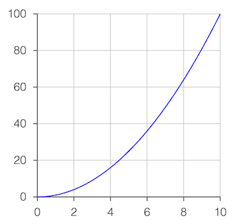
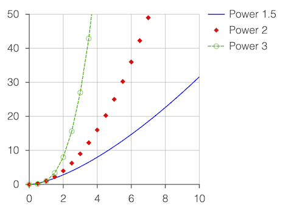
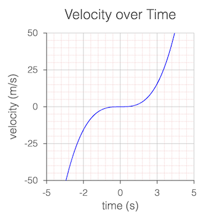
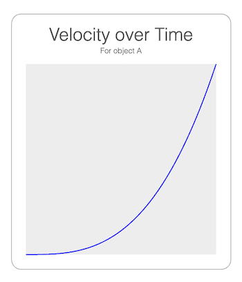


This object provides convient and customizable plot functionality.
At its simplist, just the points of the trace to be plotted need to be passed in to get a plot with automatically generated axes, tick marks, labels and grid lines.
Additional options can be used to finely customize each of these, as well as add and customize plot and axis titles, a legend, and a frame around the entire plot.
Plots can also be interactive, with both zoom and pan functionality from mouse, mouse wheel, touch and pinch gestures.
Plot of single trace with auto axis scaling
figure.add({
make: 'collections.plot',
trace: pow(),
});
Multiple traces with a legend
// Some traces are customized beyond the default color to include dashes and
// markers
figure.add({
make: 'collections.plot',
width: 2, // Plot width in figure
height: 2, // Plot height in figure
y: { start: 0, stop: 50 }, // Customize y axis limits
trace: [
{ points: pow(1.5), name: 'Power 1.5' }, // Trace names are for legend
{ // Trace with only markers
points: pow(2, 0, 10, 0.5),
name: 'Power 2',
markers: { sides: 4, radius: 0.03 },
},
{ // Trace with markers and
points: pow(3, 0, 10, 0.5), // dashed line
name: 'Power 3',
markers: { radius: 0.03, sides: 10, line: { width: 0.005 } },
line: { dash: [0.04, 0.01] },
},
],
legend: true,
});
Multiple grids and simple titles
figure.add({
make: 'collections.plot',
y: {
start: -50,
stop: 50,
step: [25, 5],
grid: [
true,
{ width: 0.005, dash: [0.01, 0.01], color: [1, 0.7, 0.7, 1] },
],
title: 'velocity (m/s)',
},
x: {
start: -5,
stop: 5,
step: [2.5, 0.5, 0.1],
grid: [
true,
{ width: 0.005, dash: [0.01, 0.01], color: [1, 0.7, 0.7, 1] },
],
title: 'time (s)',
},
trace: pow(3, -10, 10),
title: 'Velocity over Time',
});
Hide axes
// Use plot frame and plot area
// Title has a subtitle
figure.add({
make: 'collections.plot',
trace: pow(3),
x: { show: false },
y: { show: false },
plotArea: [0.93, 0.93, 0.93, 1],
frame: {
line: { width: 0.005, color: [0.5, 0.5, 0.5, 1] },
corner: { radius: 0.1, sides: 10 },
space: 0.15,
},
title: {
text: [
'Velocity over Time',
{ text: 'For object A', lineSpace: 0.13, font: { size: 0.08 } },
],
offset: [0, 0],
},
});
Secondary y axis
figure.add({
make: 'collections.plot',
trace: pow(2),
y: {
title: {
text: 'velocity (m/s)',
rotation: 0,
xAlign: 'right',
},
},
x: { title: 'time (s)' },
axes: [
{
axis: 'y',
start: 0,
stop: 900,
step: 300,
color: [1, 0, 0, 1],
location: 'right',
title: {
offset: [0.6, 0.1],
text: 'displacment (m)',
rotation: 0,
},
},
],
position: [-1, -1],
});
Cartesian axes crossing at the zero point
// Automatic layout doesn't support this, but axes, ticks, labels and titles
// can all be customized to create it.
figure.add({
make: 'collections.plot',
trace: pow(3, -10, 10),
font: { size: 0.1 },
styleTheme: 'numberLine',
x: {
title: {
text: 'x',
font: { style: 'italic', family: 'Times New Roman', size: 0.15 },
},
},
y: {
step: 500,
title: {
text: 'y',
font: { style: 'italic', family: 'Times New Roman', size: 0.15 },
},
},
grid: false,
});
Zoomable and Pannable plot
// Create the points for the plot
const points = Array(3000).fill(0).map(() => {
const x = Math.random() * 8 - 4;
const y = Math.random() / Math.sqrt(2 * Math.PI) * Math.exp(-0.5 * x ** 2);
return [x, y];
});
// Make a zoomable and pannable plot
const plot = figure.add({
make: 'collections.plot',
trace: { points, markers: { sides: 6, radius: 0.01 } },
zoom: { axis: 'xy', min: 0.5, max: 16 },
pan: true,
});
// Initialize by zooming in by a magnification factor of 10
plot.zoomValue([1.8333, 0.06672], 10);
See COL_Axis, OBJ_AxisLabels, OBJ_AxisTicks, COL_Trace and COL_PlotLegend for more examples of customizing specific parts of the plot.
To test examples below, append them to the boilerplate.
All examples below also use this power function to generate the traces:
const pow = (pow = 2, start = 0, stop = 10, step = 0.05) => {
const xValues = Fig.range(start, stop, step);
return xValues.map(x => new Fig.Point(x, x ** pow));
}
COL_Polyline
Extends OBJ_Collection
CollectionsPolyline options object that extends
OBJ_Polyline and OBJ_Collection
options object (without parent).
The Collections Polyline is a convient and powerful polyline FigureElementCollection that includes the polyline, angle annotations, side label and arrow annotations, and movable pads on each polyline point for the user to adjust dynamically.
The polyline itself is defined with an OBJ_Polyline options Object.
Angle and side annotations can be defined as COL_Angle and COL_Line, and movable pads defined with ( OBJ_Polygon & OBJ_PolylinePad).
Angles, sides and pads can all be defined either as an options object or an array of options objects. If an array, then each element in the array will correspond with a pad on the polyline. If there are less elements in the array than pads on the polyline, then the elements will recycle from the start.
Using object definitions allows for a definition of all angles, sides and pads. To customize for specific side, angle or pad indexes use = OBJ_PolylineCustomization.
Properties
- showLine: boolean | undefined = true
falsewill hide the polyline's line - angle: OBJ_PolylineAngle | Array<COL_Angle> | undefined
angle annotations - leave undefined for no angle annotations
- side: OBJ_PolylineSide | Array<COL_Line> | undefined
side annotations - leave undefined for no side annotations
- pad: OBJ_PolylinePad | Array<OBJ_PolylinePadSingle> | undefined
move pad - leave undefined for no move pads
- makeValid: null | OBJ_ValidShape | undefined
if defined, whenever points are updated the shape will be checked to ensure consistency with displayed labels of angles and sides.
- font: OBJ_Font | undefined
default font to use for labels
CollectionsPolyline
FigureElementCollection representing a polyline.
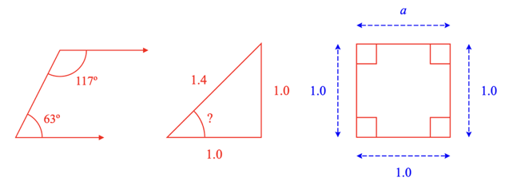

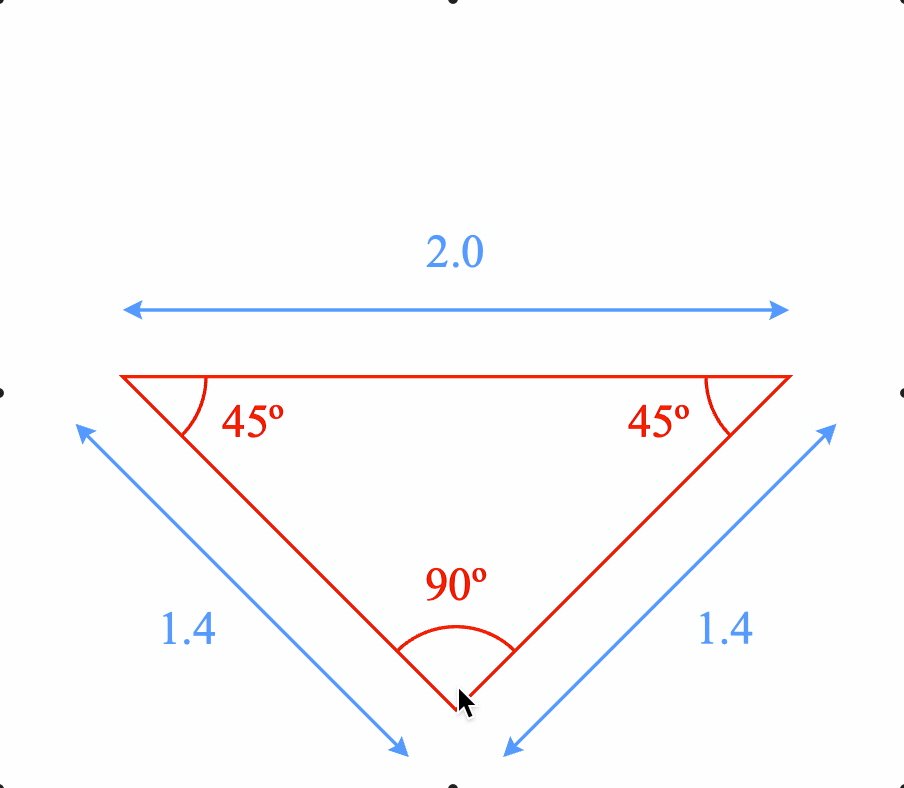
This object defines a convient and powerful polyline FigureElementCollection that includes a solid or dashed, open or closed polyline, arrows, angle annotations for polyline corners, side annotations for straight lines between points and move pads at polyline points to dynamically adjust the polyline.
See COL_Polyline for the options that can be used when creating the line.
Available notifications:
'updatePoints': SUB_PolylineUpdatePoints
Polyline with angle annotations
figure.add({
name: 'p',
make: 'collections.polyline',
points: [[1, 0], [0, 0], [0.5, 1], [1.5, 1]],
arrow: 'triangle',
angle: {
label: null,
curve: {
radius: 0.3,
},
}
});
Triangle with unknown angle
figure.add({
name: 'p',
make: 'collections.polyline',
points: [[1, 1], [1, 0], [0, 0]],
close: true,
side: {
label: null,
},
angle: {
label: {
text: '?',
offset: 0.05,
},
curve: {
radius: 0.4,
},
show: [1],
},
});
Dimensioned square
figure.add({
name: 'p',
make: 'collections.polyline',
points: [[0, 1], [1, 1], [1, 0], [0, 0]],
close: true,
side: {
showLine: true,
offset: 0.2,
color: [0, 0, 1, 1],
arrow: 'barb',
width: 0.01,
label: null,
dash: [0.05, 0.02],
0: { label: { text: 'a' } }, // Customize side 0
},
angle: {
curve: {
autoRightAngle: true,
radius: 0.3,
},
},
});
User adjustable polyline
figure.add({
name: 'p',
make: 'collections.polyline',
points: [[-0.5, 1], [1, 1], [0, 0], [1, -0.5]],
dash: [0.05, 0.02],
pad: {
radius: 0.2,
color: [1, 0, 0, 0.5], // make alpha 0 to hide pad
isMovable: true,
},
});
Annotations that automatically updates as user changes triangle
figure.add({
name: 'p',
make: 'collections.polyline',
points: [[-1, 1], [1, 1], [0, 0]],
close: true,
makeValid: {
shape: 'triangle',
hide: {
minAngle: Math.PI / 8,
},
},
side: {
showLine: true,
offset: 0.2,
color: [0.3, 0.6, 1, 1],
arrow: 'barb',
width: 0.01,
label: {
text: null,
},
},
angle: {
label: null,
curve: { radius: 0.25 },
},
pad: {
radius: 0.4,
color: [1, 0, 0, 0.005],
isMovable: true,
},
});
To test examples below, append them to the boilerplate.
COL_Rectangle
Extends OBJ_Collection
CollectionsRectangle options object that extends OBJ_Collection
options object (without parent).
This rectangle is similar to OBJ_Rectangle, except it can accomodate both a fill and a border or line simultaneously with different colors.
Properties
- width: number | undefined
rectangle width
- height: number | undefined
rectangle height
- xAlign: 'left' | 'center' | 'right' | number | undefined
horiztonal alignment of the rectangle
- yAlign: 'bottom' | 'middle' | 'top' | number | undefined
vertical alignment of the rectangle
- line: OBJ_LineStyleSimple | undefined
lines style - leave empty if only want fill
- fill: TypeColor | OBJ_Texture | undefined
fill color or texture
- corner: OBJ_CurvedCorner | undefined
corner style of rectangle
- label: OBJ_TextLines | undefined
Rectangle label
- button: boolean | TypeColor | OBJ_ButtonColor | undefined = false
trueto make the rectangle behave like a button when clicked.TypeColorto make fill, line and label the same color when clicked orOBJ_ButtonColorto specify click colors for each
CollectionsRectangle
FigureElementCollection representing a rectangle.


This object defines a rectangle FigureElementCollection that may include:
- border (line)
- fill
- label
- ability to surround another FigureElement with some space
- button behavior when clicked
Surrounding another element can be executed through either the surround method or the OBJ_SurroundAnimationStep found in the in the animation manager ( FigureElement.animations), and in the animation builder (animations.new and animations.builder).
Button behavior means the button will temporarily change a different color when it is clicked. By default, the button will become a little more transparent, but colors for the fill, label and border can also be specified.
Simple rectangle
figure.add({
name: 'rect',
make: 'collections.rectangle',
width: 2,
height: 1,
});
Round corner rectangle with fill and outside line
const rect = figure.collections.rectangle({
width: 2,
height: 1,
line: {
width: 0.02,
widthIs: 'outside',
dash: [0.1, 0.02],
},
corner: {
radius: 0.2,
sides: 10,
},
fill: [0.7, 0.7, 1, 1],
});
figure.add('rect', rect);
Rectangle surrounds elements of an equation
figure.add([
{
name: 'rect',
make: 'collections.rectangle',
color: [0.3, 0.3, 1, 1],
line: { width: 0.01 },
},
{
name: 'eqn',
make: 'equation',
forms: { 0: [{ frac: ['a', 'vinculum', 'b'] }, ' ', 'c'] },
position: [1, 0],
scale: 1.5,
}
]);
const rect = figure.getElement('rect');
const eqn = figure.getElement('eqn');
rect.surround(eqn._a, 0.03);
rect.animations.new()
.pulse({ delay: 1, scale: 1.5 })
.surround({ target: eqn._b, space: 0.03, duration: 1 })
.pulse({ delay: 1, scale: 1.5 })
.surround({ target: eqn._c, space: 0.03, duration: 1 })
.pulse({ delay: 1, scale: 1.5 })
.start();
Make a rectangle that behaves like a button
figure.add([
{
name: 'rect',
make: 'collections.rectangle',
width: 0.5,
height: 0.3,
color: [0.3, 0.3, 0.3, 1],
label: 'Save',
corner: { radius: 0.05, sides: 10 },
fill: [0.9, 0.9, 0.9, 1],
button: {
fill: [0.95, 0.95, 0.95, 1],
},
mods: {
isTouchable: true,
onClick: () => console.log('clicked'),
},
},
]);
See COL_Rectangle for setup options.
See OBJ_SurroundAnimationStep for surround animation step options.
To test examples below, append them to the boilerplate.
COL_Slider
Extends OBJ_Collection
CollectionsSlider options object that extends OBJ_Collection
options object (without parent).
Properties
- width: number | undefined
slider width
- height: number | undefined
slider height
- barHeight: number | undefined
height of slider bar bar
- sides: number | undefined = 20
number of sides in curves
- marker: OBJ_SliderMarker | 'polygon' | 'rectangle' | 'none' | undefined = 'polygon'
marker style
- theme: 'dark' | 'light' | undefined = dark
selects default colors for a light or dark switch
- colorOff: TypeColor | undefined = bar color from slider
value to 1
slider off color
- colorOn: TypeColor | undefined = [0, 1, 0, 1]
slider on color (bar color from 0 to slider value
- markerBorder: OBJ_SliderBorder | undefined = defaults to on
where width is half the figure's default line width
border around circle
- barBorder: OBJ_SliderBorder | undefined = defaults to off - width = 0
border around bar
CollectionsSlider
FigureElementCollection representing a slider control.
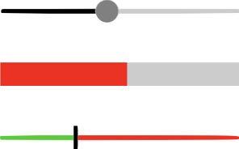
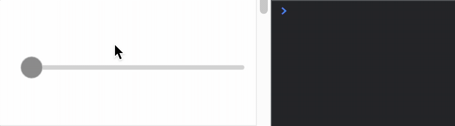
Notifications - The notification manager property notifications will
publish the following events:
changed: slider value is changed - slider position in percent is passed as parameter to callback.
See COL_Slider for setup options.
To test examples below, append them to the boilerplate
Simple slider with notification causing a console statement
const slider = figure.add({
make: 'collections.slider',
barHeight: 0.02,
height: 0.1,
width: 1,
color: [0.5, 0.5, 0.5, 1],
touchBorder: 0.2,
});
slider.notifications.add('changed', (position) => {
console.log(position)
});
Slider without a marker and red fill for on
figure.add({
make: 'collections.slider',
barHeight: 0.1,
colorOn: [1, 0, 0, 1],
width: 1,
touchBorder: 0.2,
marker: 'none',
});
Slider with rectangle marker and multi-colors
const slider = figure.add({
make: 'collections.slider',
barHeight: 0.02,
height: 0.1,
width: 1,
marker: 'rectangle',
colorOff: [1, 0, 0, 1],
colorOn: [0, 0.8, 0, 1],
color: [0, 0, 0, 1],
});
COL_Toggle
Extends OBJ_Collection
CollectionsToggle options object that extends OBJ_Collection
options object (without parent).
Properties
- width: number | undefined
toggle width
- height: number | undefined
toggle height
- barHeight: number | undefined
height of toggle bar showing on or off
- sides: number | undefined = 20
number of sides in curves
- theme: 'dark' | 'light' | undefined = dark
selects default colors for a light or dark switch
- colorOff: TypeColor | undefined
toggle off color
- colorOn: TypeColor | undefined = [0, 1, 0, 1]
toggle on color
- circleBorder: OBJ_ToggleBorder | undefined = defaults to on
where width is half the figure's default line width
border around circle
- barBorder: OBJ_ToggleBorder | undefined = defaults to off - width = 0
border around bar
- label: OBJ_ToggleLabel | undefined
CollectionsToggle
FigureElementCollection representing a toggle switch.
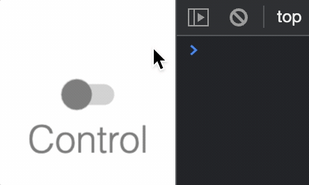
The toggle switch can be turned on or off.
Notifications - The notification manager property notifications will
publish the following events:
toggle: switch is changed -truewill be passed if the switch is changed to on, andfalsewill be passed if the switch is changed to offon: switch is changed to onoff: switch is changed to off
See COL_Toggle for setup options.
To test examples below, append them to the boilerplate
Simple toggle switch with notification causing a console statement
const toggle = figure.add({
make: 'collections.toggle',
label: {
text: 'Control',
location: 'bottom',
scale: 0.6,
},
});
toggle.notifications.add('toggle', (state) => {
state ? console.log('on') : console.log('off');
});
OBJ_Collection
FigureElementCollection options object.

A collection is a group of other FigureElements that will all inherit the parent collections transform.
Properties
- transform: TypeParsableTransform | undefined
- position: TypeParsablePoint | undefined
if defined, will overwrite first translation of
transform - color: TypeColor | undefined
default color
- parent: FigureElement | null | undefined
parent of collection
- border: TypeParsableBuffer | TypeParsableBorder | 'children' | 'rect' | undefined = 'children'
defines border of collection. Use
childrento use the borders of the children. Use'rect'for the bounding rectangle of the borders of the children. UseTypeParsableBufferfor the bounding rectangle of the borders of the children with some buffer. UseTypeParsableBorderfor a custom border. - touchBorder: TypeParsableBuffer | TypeParsableBorder | 'border' | 'rect' | undefined = 'children'
defines the touch border of the collection. Use
'border'to use the same as the border of the collection. Usechildrento use the touch borders of the children. Use'rect'for the bounding rectangle of the touch borders of the children. UseTypeParsableBufferfor the bounding rectangle of the touch borders of the children with some buffer. UseTypeParsableBorderfor a custom touch border.
Example 1
figure.add(
{
name: 'c',
make: 'collection',
elements: [ // add two elements to the collection
{
name: 'hex',
make: 'polygon',
sides: 6,
radius: 0.5,
},
{
name: 'text',
make: 'text',
text: 'hexagon',
position: [0, -0.8],
xAlign: 'center',
font: { size: 0.3 },
},
],
},
);
// When a collection rotates, then so does all its elements
figure.getElement('c').animations.new()
.rotation({ target: Math.PI * 1.999, direction: 1, duration: 5 })
.start();
Collections and primitives can also be created from figure.collections
// and `figure.primitives`.
const c = figure.collections.collection();
const hex = figure.primitives.polygon({
sides: 6,
radius: 0.5,
});
const text = figure.primitives.text({
text: 'hexagon',
position: [0, -0.8],
xAlign: 'center',
font: { size: 0.3 },
});
c.add('hex', hex);
c.add('text', text);
figure.add('c', c);
// When a collection rotates, then so does all its elements
c.animations.new()
.delay(1)
.rotation({ target: Math.PI * 1.999, direction: 1, duration: 5 })
.start();
position of the angle vertex